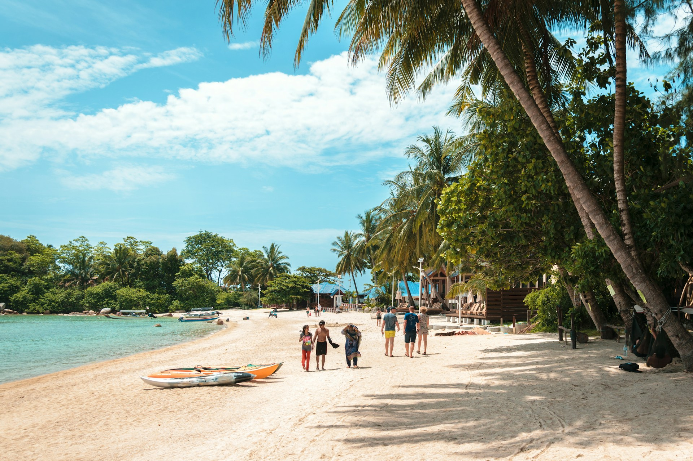
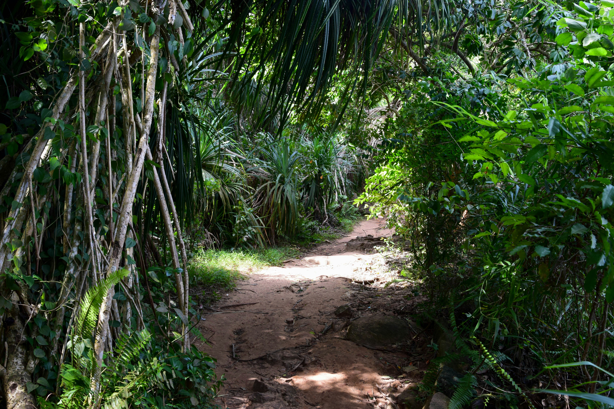

Day One
- Arrive in Taniti City via air or cruise ship
- Check into your choice of lodging (hostel, hotel, B&B, or resort)
- Explore native architecture in Taniti City
- Relax on the white, sandy beaches of Yellow Leaf Bay
- Dine at a local restaurant featuring fresh fish, American, or Pan-Asian cuisine

Additional Days
- Take boat or bus tours of the island
- Hike in the lush rainforest
- Visit Taniti’s active volcano
- Go snorkeling, zip-lining, or on a chartered fishing tour
- Visit the local history museum or art galleries
- Enjoy shopping at supermarkets and local stores

Final Day
- Play at the arcade or go bowling in Merriton Landing
- Visit pubs, the microbrewery, or dance at the new club
- Take a helicopter ride for a last view of the island
- Enjoy a final meal at a local restaurant
- Depart from Taniti City via airport or cruise ship